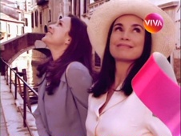
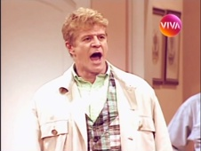
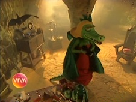
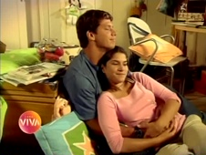
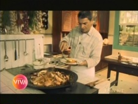
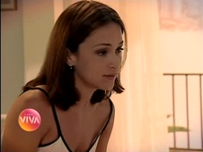
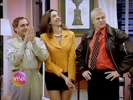

Criação
- 
- 
"Quando uma nova história começa, você pode escolher os caminhos, os amores e as amizades. Não existem regras, nem receita: o importante, é viver do seu jeito. Está no ar, o mais novo canal da família Globosat: Viva. Grandes sucessos da TV brasileira. Feito para quem quer se divertir e se emocionar: com romances, e intrigas. E intermináveis confusões! Estão todos aqui, no Viva: novelas, séries e minisséries consagradas, com grandes estrelas! Além disso, uma programação recheada de atrações para toda a família: tem humor, entretenimento, dicas de culinária... uma sessão de cinema só com filmes dublados! Com todas essas atrações, o Viva é uma ótima companhia para o seu dia a dia! Do jeito que você quer, do jeito que você gosta. Está no ar, o mais novo canal Globosat: Viva, do seu jeito."
Foi com o texto acima que o Canal Viva estreou, em 18 de maio de 2010, uma terça-feira, com a proposta de atrair, segundo Alberto Pecegueiro, diretor-geral da Globosat à época, o público feminino de classes B e C. Em matéria da revista Meio & Mensagem, o público-alvo justifica-se: "A diretoria executiva da Globosat notou (...) que havia uma lacuna para as mulheres das classes A, B e C maiores de 25 anos, casadas e cujos interesses primordiais são a família e o bem-estar. Da descoberta desse nicho surgiu a ideia de montar um canal composto de atrações já conhecidas do grande público". Conforme o portal comercial da Globosat à época, "homens de faixa etária semelhante, na maioria casados, compõem o target secundário".

Programação

- 
- 
A premissa original do canal Viva era a de ser a companhia perfeita a qualquer hora do dia: "as manhãs são do jeito que a sua família gosta, com diversão à vontade". Sítio do Picapau Amarelo, Sandy & Junior, Malhação e Caça Talentos eram as principais representantes do turno.
"As tardes são do jeito que você quer, com os programas e novelas que marcaram nossas vidas": era momento de matar as saudades de Quatro Por Quatro e Por Amor.
- 
- 
- 
"E as noites, também são do seu jeito, com filmes dublados e as séries inesquecíveis da TV brasileira", como Mulher, Sai de Baixo, A Comédia da Vida Privada e Sexo Frágil.
No Viva, "todo o dia, e o dia todo, é horário nobre, porque o Viva tem os campeões de audiência em toda a programação". Para saber mais sobre cada reprise, é só navegar entre os gêneros abaixo: